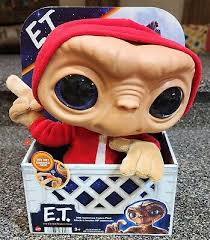

Welcome to My E.T. Toy Collection
As a child of the 90s, E.T. The Extraterrestrial was more than just a movie to me—it was a friend. I grew up watching E.T. over and over again, and I even cried the first time I watched it because I loved E.T. so much. I thought he was going to die!
Today, I carry that love for E.T. with me, and it’s a part of my life that I cherish deeply. When I gave birth to my son, I named him Elliott after my childhood hero. E.T. and Elliott have been a huge part of our lives, and this website is dedicated to both of them!

"I'll Be Right Here" – E.T.
About E.T. The Extraterrestrial
E.T. is one of the most beloved characters from the 1982 film directed by Steven Spielberg. The story of E.T., a kind and gentle alien stranded on Earth, and his friendship with a young boy named Elliott, captured the hearts of audiences worldwide. Over the years, E.T. became an iconic symbol of love, friendship, and family.
My E.T. toy was my constant companion during my childhood, and it’s something I’ve cherished since the first time I got it. My son and I continue to collect E.T. toys and memorabilia, celebrating the magic of this film and the special connection it gave me with my childhood best friend, E.T.
Our E.T. Toy Collection
Here are a few of the many E.T. toys and collectibles we've been adding to our collection over the years!